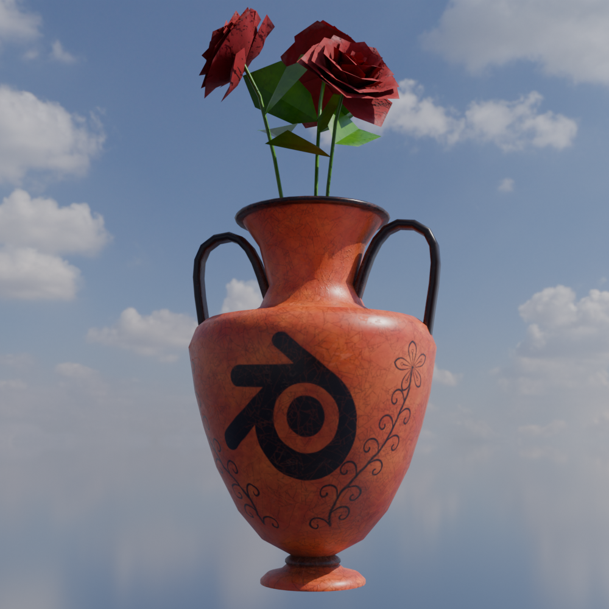

I am proficient in Blender and use it frequently for various creative projects - one of which is this website! I have easily racked up several hundred hours learning 3D modelling, including manual & procedural modelling, UV mapping, and texturing work in Blender and Adobe Substance suite.
I prefer a lower-poly art style, similar to old video games such as Katamari Damacy or Myst. However, I am also confident in modern-day methodologies, such as high-poly map baking and high resolution procedural texturing.